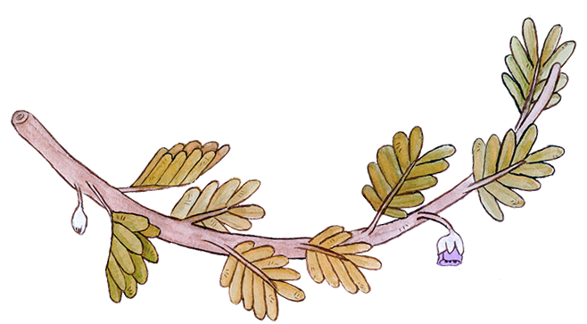

Un bosque es un ecosistema complejo, que logra mantenerse en equilibrio a pesar de los cambios climáticos, el agua disponible y de los variables factores medioambientales.

Beneficios naturales
La infiltración de aguas lluvias hacia capas subterráneas, reduciendo la erosión de los suelos y las inundaciones.
Sus raíces contienen la tierra, evitando aluviones, así como la contención de rocas en gran tamaño en la base de sus árboles
Es un pulmón verde para Santiago, que presenta gran cantidad de especies perennes que permiten reducir aquellas enfermedades respiratorias derivadas de la contaminación del aire atrapando partículas en suspensión incluso en invierno.
Actúa como un regulador de temperatura, enviando aire frío y limpio hacia el valle durante la mañana.